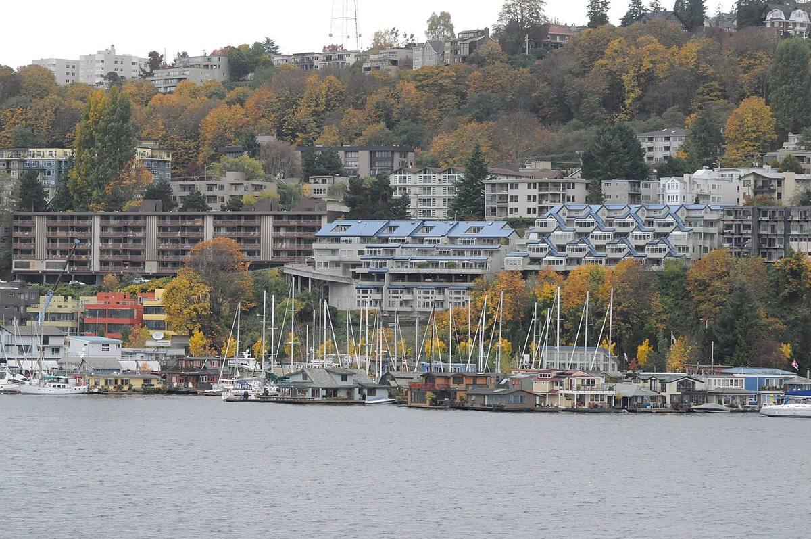

Living in Westlake

Westlake is a neighborhood in Seattle, Washington. It was named after its location on the western shore of Lake Union. It is a relatively narrow neighborhood, there being only a few blocks between the shoreline and its western limit at Aurora Avenue N., beyond which is Queen Anne. To the south beyond Aloha Street is South Lake Union, and to the north across the Fremont Cut is Fremont. Its main thoroughfares are Dexter and Westlake Avenues N.. (From Wikipedia, CC BY-SA 4.0)
Westlake is a neighborhood in Cascade, Seattle with about 2,948 residents. The typical home value is about $619K (-2.5% over the past year), and 23 homes sold in the last 12 months. It is very walkable, with higher crime than most neighborhoods in the area.
Home prices and the market
| Typical home value | $619K · -2.5% over 12 months |
|---|---|
| Homes sold, last 12 months | 23 · median sale price $530K · 20 were condos |
| Homes for sale (estimate) | 15 · homes typically go under contract in 18 days |
| Median household income | $130K · 108th highest income of 155 |
Schools
| Elementary | John Hay Elementary School, 0.5 mi · 52% meet standard Area average 58% · 105th best elementary schools of 155 |
|---|---|
| Middle school | McClure Middle School, 0.8 mi · 70% meet standard Area average 68% · 80th best middle schools of 155 |
| High school | Cascade Parent Partnership Program, 1.2 mi · 47% meet standard Area average 77% · 49th best high schools of 155 |
| Nearest college | Cornish College Kerry Hall, 1.0 mi |
Share of students meeting the Washington state standard in English and math (2024-25). The nearest school is not always the assigned school; check with the school district.
Safety
About 73 crimes per 1,000 residents a year (violent crimes counted three times), higher crime than most neighborhoods in the area: 126th lowest crime of 155. Based on mapped police incidents in this neighborhood, scaled to the city's FBI-reported rate. Busy commercial areas can look high because visitors are not counted as residents.
Getting around
| Walkability | 19.4 of 20 (very walkable) · 1st most walkable of 155 |
|---|---|
| Light rail or train | Lake Union Park, 0.5 mi · 24th closest to rail of 155 |
| Nearest bus stop | Dexter Ave N & Galer St, 0.01 mi |
| How residents commute | 12% take transit · 42% work from home |
Everyday amenities
| Grocery store | QFC, 0.6 mi · 9 within a mile |
|---|---|
| Pharmacy | Walgreens, 0.6 mi |
| Restaurants | 109 within a mile · 17th most restaurants nearby of 155 |
| Shopping | Broadway Market, 1.2 mi |
| Hospital | Virginia Mason Hospital, 1.7 mi · 26 clinics within 2 miles |
| Library | Queen Anne Library, 1.0 mi |
Parks and recreation
| Nearest park | Northeast Queen Anne Greenbelt, 0.1 mi · 162 acres of parks within a mile |
|---|---|
| Large green space | Queen Anne Boulevard, 0.3 mi |
| Walking trail | Bellevue Place Bike Path, 0.7 mi |
| Gyms, spas and studios | 34 within a mile |
| Golf | Interbay Golf, 1.7 mi |
Thinking about Westlake?
Rachel Yo, Realogics Sotheby's International Realty, can walk you through homes for sale, recent sales and what to know before you buy here.
Your details go only to Rachel Yo at Realogics Sotheby's International Realty to answer your request. They are not sold or shared.
Nearby neighborhoods
- East Queen AnneSeattle · $886K
- South Lake UnionSeattle · $674K
- Lower Queen AnneSeattle · $670K
- EastlakeSeattle · $1.04M
- West Queen AnneSeattle · $1.39M
- BroadwaySeattle · $658K
Data as of: home values Zillow 2026-09; recorded sales Nov 2025 – Oct 2026; schools OSPI 2024-25; Census ACS 2020-2024. Distances are straight-line from the center of the neighborhood.